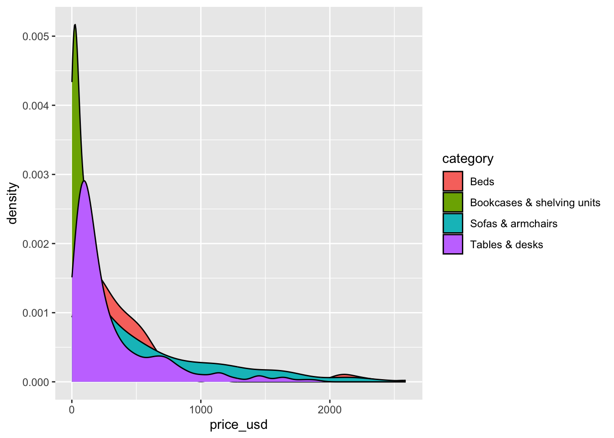

usethis::use_git_config(
user.name = "Your name",
user.email = "Email associated with your GitHub account"")Lab 01: Ikea furniture
Simple linear regression
Important
Due:
- Monday, September 12, 11:59pm (Thursday labs)
- Tuesday, September 13, 11:59pm (Friday labs)
Introduction
This lab will go through much of the same workflow we’ve demonstrated in class. The main goal is to reinforce our demo of R and RStudio, which we will be using throughout the course both to learn the statistical concepts discussed in the course and to analyze real data and come to informed conclusions.
Note
R is the name of the programming language itself and RStudio is a convenient interface.
An additional goal is to reinforce git and GitHub, the collaboration and version control system that we will be using throughout the course.
Note
Git is a version control system (like “Track Changes” features from Microsoft Word but more powerful) and GitHub is the home for your Git-based projects on the internet (like DropBox but much better).
To make versioning simpler, this and the next lab are individual labs. In the future, you’ll learn about collaborating on GitHub and producing a single lab report for your lab team, but for now, concentrate on getting the basics down.
Learning goals
By the end of the lab, you will…
- Be familiar with the workflow using RStudio and GitHub
- Gain practice writing a reproducible report using Quarto
- Practice version control using GitHub
- Be able to create data visualizations using
ggplot2and use those visualizations to describe distributions - Be gain to fit, interpret, and evaluate simple linear regression models
Getting Started
Important
Your lab TA will lead you through the Getting Started section.
Log in to RStudio
Go to https://cmgr.oit.duke.edu/containers and login with your Duke NetID and Password.
Click
STA210to log into the Docker container. You should now see the RStudio environment.
Warning
If you haven’t yet done so, you will need to reserve a container for STA210 first.
Set up your SSH Key
You will authenticate GitHub using SSH. Below are an outline of the authentication steps; you are encouraged to follow along as your TA demonstrates the steps.
Note
You only need to do this authentication process one time on a single system.
- Step 1: Type
credentials::ssh_setup_github()into your console. - Step 2: R will ask “No SSH key found. Generate one now?” You should click 1 for yes.
- Step 3: You will generate a key. It will begin with “ssh-rsa….” R will then ask “Would you like to open a browser now?” You should click 1 for yes.
- Step 4: You may be asked to provide your username and password to log into GitHub. This would be the ones associated with your account that you set up. After entering this information, you should paste the key in and give it a name. You might name it in a way that indicates where the key will be used, e.g.,
sta210)
You can find more detailed instructions here if you’re interested.
Configure git
There is one more thing we need to do before getting started on the assignment. Specifically, we need to configure your git so that RStudio can communicate with GitHub. This requires two pieces of information: your name and email address.
To do so, you will use the use_git_config() function from the usethis package.
Type the following lines of code in the console in RStudio filling in your name and the email address associated with your GitHub account.
For example, mine would be
usethis::use_git_config(
user.name = "Maria Tackett",
user.email = "maria.tackett@duke.edu")You are now ready interact between GitHub and RStudio!
Clone the repo & start new RStudio project
- Go to the course organization at github.com/sta210-fa22 organization on GitHub. Click on the repo with the prefix lab-01-ikea-. It contains the starter documents you need to complete the lab.
- Click on the green CODE button, select Use SSH (this might already be selected by default, and if it is, you’ll see the text Clone with SSH). Click on the clipboard icon to copy the repo URL.
In RStudio, go to File \(\rightarrow\) New Project \(\rightarrow\) Version Control \(\rightarrow\) Git.
Copy and paste the URL of your assignment repo into the dialog box Repository URL. Again, please make sure to have SSH highlighted under Clone when you copy the address.
Click Create Project, and the files from your GitHub repo will be displayed in the Files pane in RStudio.
Click lab-01.qmd to open the template Quarto file. This is where you will write up your code and narrative for the lab.
R and R Studio
Below are the components of the RStudio IDE.

Below are the components of an Quarto (.Rmd) file.

YAML
The top portion of your Quarto file (between the three dashed lines) is called YAML. It stands for “YAML Ain’t Markup Language”. It is a human friendly data serialization standard for all programming languages. All you need to know is that this area is called the YAML (we will refer to it as such) and that it contains meta information about your document.
Important
Open the Quarto (.Rmd) file in your project, change the author name to your name, and render the document. Examine the rendered document.
Committing changes
Now, go to the Git pane in your RStudio instance. This will be in the top right hand corner in a separate tab.
If you have made changes to your Quarto (.qmd) file, you should see it listed here. Click on it to select it in this list and then click on Diff. This shows you the difference between the last committed state of the document and its current state including changes. You should see deletions in red and additions in green.
If you’re happy with these changes, we’ll prepare the changes to be pushed to your remote repository. First, stage your changes by checking the appropriate box on the files you want to prepare. Next, write a meaningful commit message (for instance, “updated author name”) in the Commit message box. Finally, click Commit. Note that every commit needs to have a commit message associated with it.
You don’t have to commit after every change, as this would get quite tedious. You should commit states that are meaningful to you for inspection, comparison, or restoration.
In the first few assignments we will tell you exactly when to commit and in some cases, what commit message to use. As the semester progresses we will let you make these decisions.
Now let’s make sure all the changes went to GitHub. Go to your GitHub repo and refresh the page. You should see your commit message next to the updated files. If you see this, all your changes are on GitHub and you’re good to go!
Push changes
Now that you have made an update and committed this change, it’s time to push these changes to your repo on GitHub.
In order to push your changes to GitHub, you must have staged your commit to be pushed. click on Push.
Packages
We will use the following packages in today’s lab.
library(tidyverse)
library(tidymodels)Data
Today’s data is all about Ikea furniture. The data was obtained from the TidyTuesday data collection.
Use the code below to read in the data.
ikea <- read_csv("data/ikea.csv")The variable definitions are as follows:
| variable | class | description |
|---|---|---|
| item_id | double | item id which can be used later to merge with other IKEA data frames |
| name | character | the commercial name of items |
| category | character | the furniture category that the item belongs to (Sofas, beds, chairs, Trolleys,…) |
| sellable_online | logical | Sellable online TRUE or FALSE |
| link | character | the web link of the item |
| other_colors | character | if other colors are available for the item, or just one color as displayed in the website (Boolean) |
| short_description | character | a brief description of the item |
| designer | character | The name of the designer who designed the item. this is extracted from the full_description column. |
| depth | double | Depth of the item in centimeters |
| height | double | Height of the item in centimeters |
| width | double | Width of the item in centimeters |
| price_usd | double | the current price in US dollars as it is shown in the website by 4/20/2020 |
Exercises
Goal: You are furnishing a new apartment and would like to use statistical analysis to get idea of how much the furniture will cost and how the cost may change based on the type and width.
Write all code and narrative in your Quarto file. Write all narrative in complete sentences. Throughout the assignment, you should periodically render your Quarto document to produce the updated PDF, commit the changes in the Git pane, and push the updated files to GitHub.
Tip
Make sure we can read all of your code in your PDF document. This means you will need to break up long lines of code. One way to help avoid long lines of code is is start a new line after every pipe (|>) and plus sign (+).
Exercise 1
Viewing a summary of the data is a useful starting point for data analysis, especially if the dataset has a large number of observations (rows) or variables (columns). Run the code below to use the glimpse function to see a summary of the ikea dataset.
How many observations are in the ikea dataset? How many variables?
glimpse(ikea)
Note
In your `lab-01.qmd` document you’ll see that we already added the code required for the exercise as well as a sentence where you can fill in the blanks to report the answer. Use this format for the remaining exercises.
Also note that the code chunk as a label: glimpse-data. It’s not required, but good practice and highly encouraged to label your code chunks in this way.
Exercise 2
We begin each regression analysis with exploratory data analysis (EDA) to help us “get to know” the data and examine the variable distributions and relationships between variables. We do this by visualizing the data and calculating summary statistics to describe the variables in our dataset. In this lab, we will focus on data visualizations.
When we make visualizations, we want them to be clear and suitable for a professional audience. This means that, at a minimum, each visualization should have an informative title and informative axis labels.
Fill in the code below to visualize the distribution of price_usd, the price in US dollars.
ggplot(data = ikea, aes(x = ____)) +
geom_histogram() +
labs(x = "_____",
y = "_____",
title = "_____")Exercise 3
Use the visualization to describe the distribution of price. In your narrative, include description of the shape, approximate center, approximate spread, and any presence of outliers. Briefly explain why the median is more representative of the center of this distribution than the mean.
This is a good place to render, commit, and push changes to your lab-01 repo on GitHub. Write an informative commit message (e.g. “Completed exercises 1 - 3”), and push every file to GitHub by clicking the checkbox next to each file in the Git pane. After you push the changes, the Git pane in RStudio should be empty.
Exercise 4
In this course, we’ll be most interested in the relationship between two or more variables, so let’s begin by looking at the distribution of price by category. We’ll focus on the four categories in the code below, since these may be the types of furniture most useful to furnish a new apartment.
Use the code below to create a new data frame that only includes the furniture categories of interest. We’re assigning this subsetted data frame to an object with a new name, so we don’t overwrite the original data.
ikea_sub <- ikea |>
filter(category %in% c("Tables & desks", "Beds",
"Bookcases & shelving units",
"Sofas & armchairs"))How many observations are in the ikea_sub dataset? How many variables?
Important
You will use ikea_subset for Exercises 5 - 9.
Exercise 5
The code below creates a density plot1 where each density curve is filled in based on category; this allows us to compare the distribution of price across the four categories.
ggplot(data = ikea_sub, aes(x = price_usd, fill = category)) +
geom_density() 
The overlapping colors make it difficult to tell what’s happening with the distributions for the categories plotted first and hence covered by categories plotted over them. We can change the transparency level of the fill color to help with this. The alphaargument takes values between 0 and 1, where 0 is completely transparent and 1 is completely opaque. It’s difficult to tell what exact value will work best, so it’s best to try a few.
ggplot(data = ikea_sub, aes(x = price_usd, fill = category)) +
geom_density(alpha = 0.8) 
Recreate the density plot using a more suitable alpha level, so the distribution of all categories is more easily seen. Include an informative title and informative axis labels on the plot.
This is a another good place to render, commit, and push changes to your remote lab-01 repo on GitHub. Write an informative commit message (e.g. “Completed exercises 4 - 5”), and push every file to GitHub. After you push the changes, the Git pane in RStudio should be empty.
Exercise 6
Briefly explain why we defined the fill of the curves by mapping aesthetics of the plot (inside the aes function) but we defined the alpha level as a characteristic of the plotting geom.
Exercise 7
Overlapping density plots are not the only way to visualize the relationship between a quantitative and categorical variable. Use a different type of plot to visualize the relationship between price_usd and category. Include an informative title and informative axis labels.
Tip
You can use the ggplot2 cheatsheet and from Data to Viz for inspiration.
Exercise 8
Compare and contrast your plots from the previous exercise to the overlapping density plots from Exercise 5. What features are more apparent in the plot from the previous exercise that aren’t in the overlapping density plots? What features are more apparent in the overlapping density plots that aren’t in the plot from the previous exercise? What features are apparent in both?
Render, commit, and push changes to your lab-01 repo on GitHub. Write an informative commit message (e.g. “Completed exercises 6 - 8”), and push every file to GitHub by clicking the checkbox next to each file in the Git pane. After you push the changes, the Git pane in RStudio should be empty.”
Exercise 9
You decide to focus on purchasing a sofa for now, so you want to fit a model using width to predict the price of furniture categorized under sofas and armchairs. Create a new data frame called sofas that only includes furniture items in the category Sofas & armchairs that have values for width and price_usd, i.e., remove observations that have a missing value for at least one of those variables. How many observations are in the sofas data frame? How many variables?
Important
You will use the sofas data frame for the remainder of lab.
Exercise 10
Create a visualization of the relationship between the width and price of sofas and armchairs at Ikea. Include informative axis labels and an informative title. Use the visualization to describe the relationship between the two variables.
Exercise 11
Fit a linear model that can be used to predict the price of sofas and armchairs based on the width. Neatly display the model output.
Exercise 12
Write the equation of the fitted model from the previous exercise. Use LaTex to write the model using appropriate notation. Round the slope and intercept to 3 decimal places.
Render, commit, and push changes to your lab-01 repo on GitHub. Write an informative commit message (e.g. “Completed exercises 9 - 12”), and push every file to GitHub by clicking the checkbox next to each file in the Git pane. After you push the changes, the Git pane in RStudio should be empty.”
Exercise 13
Interpret the slope in the context of the data.
Does the intercept have a meaningful interpretation? If so, interpret the intercept in the context of the data. Otherwise briefly explain why not.
Exercise 14
You would like to evaluate the model fit. Calculate \(R^2\), and interpret it in the context of the data. Then, calculate RMSE and explain what this value tells you in the context of the data.
Tip
You will need to create the augmented data set to calculate these values.
Based on these statistics, do you think this model is a good fit for the data? Briefly explain why or why not.
You’re done and ready to submit your work! render, commit, and push all remaining changes. You can use the commit message “Done with Lab 1!”, and make sure you have pushed all the files to GitHub (your Git pane in RStudio should be empty) and that all documents are updated in your repo on GitHub. The PDF document you submit to Gradescope should be identical to the one in your GitHub repo.
See the instructions below to submit your work on Gradescope.
Submission
In this class, we’ll be submitting PDF documents to Gradescope.
Warning
Before you wrap up the assignment, make sure all documents are updated on your GitHub repo. We will be checking these to make sure you have been practicing how to commit and push changes.
Remember – you must turn in a PDF file to the Gradescope page before the submission deadline for full credit.
To submit your assignment:
- Go to http://www.gradescope.comand click Log in in the top right corner.
- Click School Credentials ➡️ Duke NetID and log in using your NetID credentials.
- Click on your STA 210 course.
- Click on the assignment, and you’ll be prompted to submit it.
- Mark the pages associated with each exercise. All of the pages of your lab should be associated with at least one question (i.e., should be “checked”).
- Select the first page of your .PDF submission to be associated with the “Workflow & formatting” section.
Grading (50 pts)
| Component | Points |
|---|---|
| Ex1 - 14 | 47 |
| Workflow & formatting | 32 |
Resources for additional practice (optional)
- Chapter 2: Get Started Data Visualization by Kieran Healy
- Chapter 3: Data visualization in R for Data Science by Hadley Wickham
- RStudio Cloud Primers
- Visualization Basics: https://rstudio.cloud/learn/primers/1.1
- Work with Data: https://rstudio.cloud/learn/primers/2
- Visualize Data: https://rstudio.cloud/learn/primers/3
Footnotes
Learn more about density plots and see code examples at the ggplot2 reference page for density plots.↩︎
The “Workflow & formatting” grade is to assess the reproducible workflow. This includes having at least 3 informative commit messages and updating the name and date in the YAML.↩︎